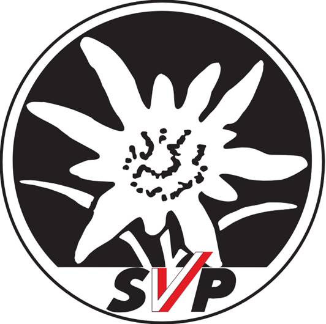
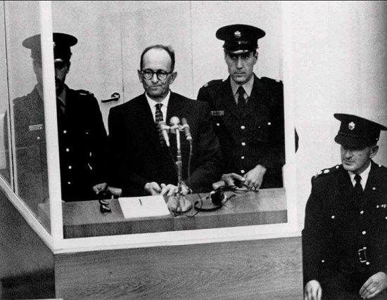
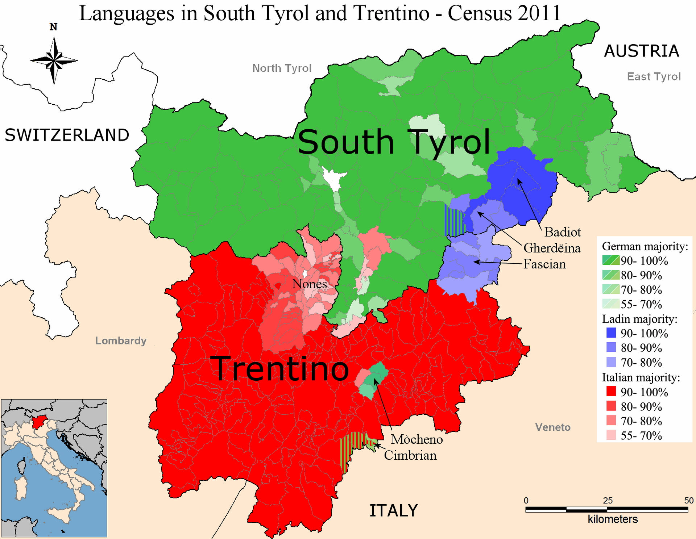
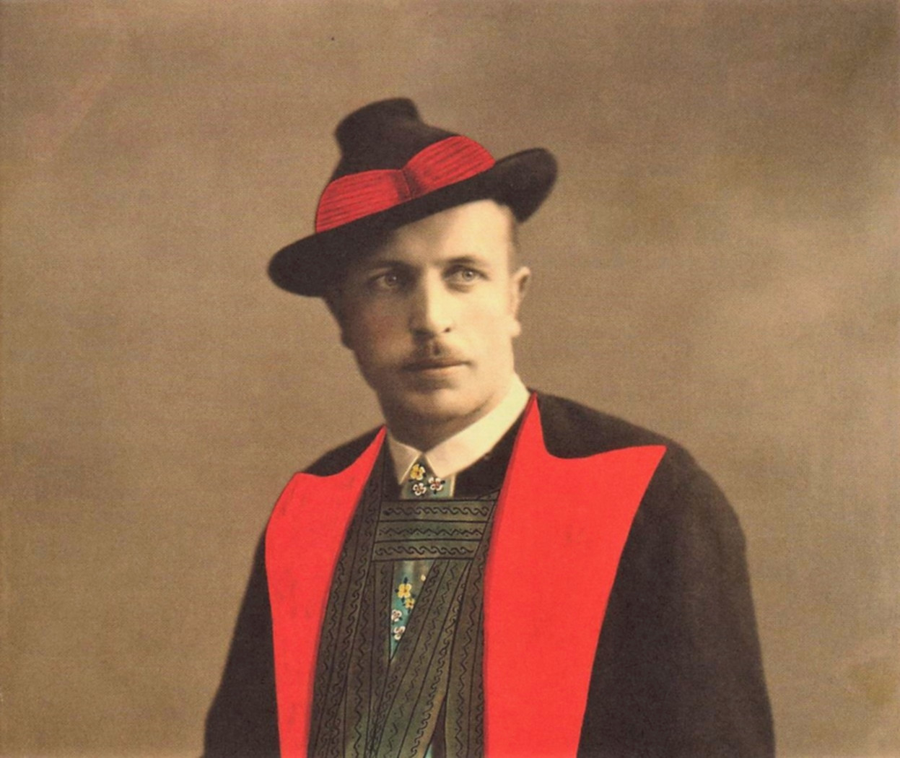
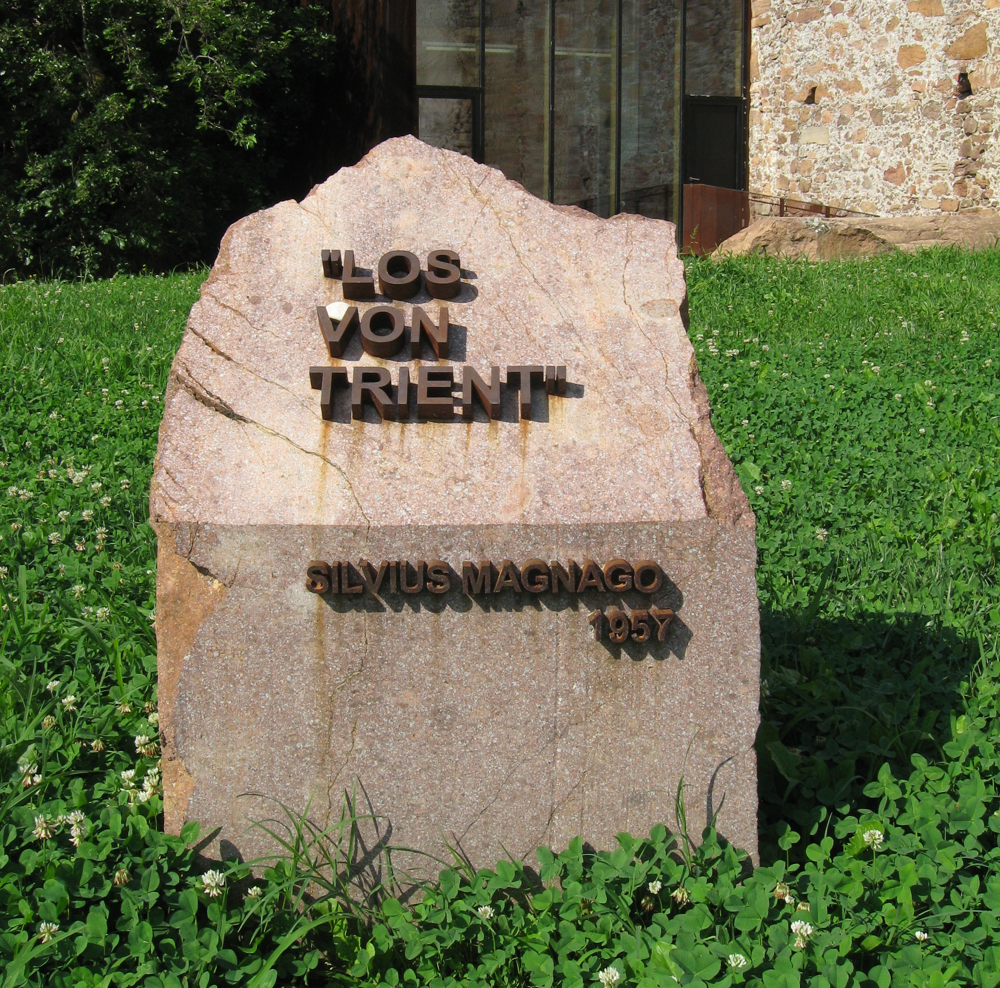
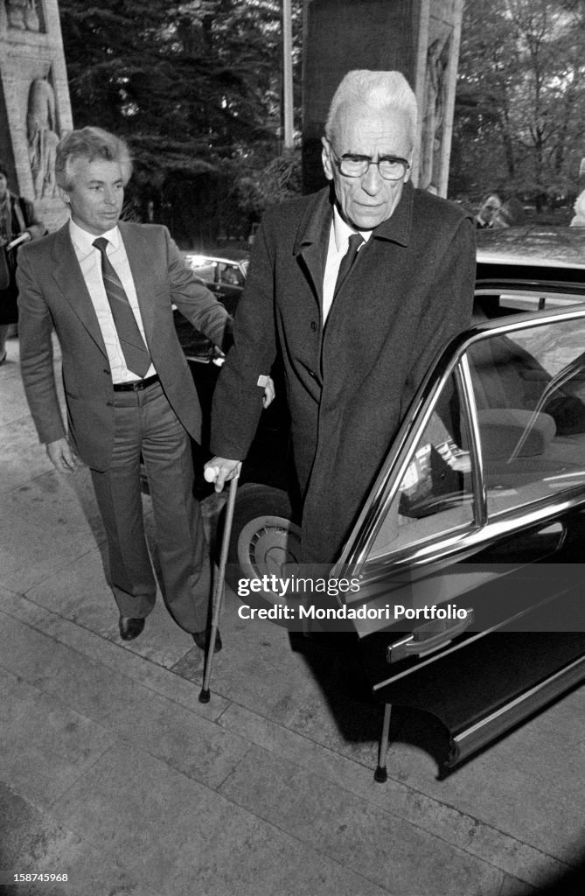

남티롤(Südtirol) 이야기 (7) - 배은망덕
게시: 2026-07-02T06:30:00+09:00
1945년 나치가 패망하자, 이탈리아 잔류를 선택했다가 친나치 옵탄텐들의 탄압과 괴롭힘에 시달리던 남티롤 독일계 주민들, 즉 다블라이버(Dableiber)들에겐 고생 끝 행복 시작의 길이 열리는 듯 했습니다. 그러나 세상은 그렇게 동화처럼 돌아가지 않는 법입니다. 우리나라도 1945년 일제 패망과 함께 친일파들이 싹 쓸려나가지 않았던 것처럼, 남티롤에서도 친나치 활동을 대놓고 벌이던 옵탄텐들을 단죄하는 것은 쉽지 않았습니다. 독일군의 항복 선언과 함께 연합군을 앞세운 이탈리아 정부군이 남티롤로 진입할 기세를 보이자 당장 옵탄텐-다블라이버 사이의 갈등은 사소한 문제가 되어 버렸습니다. 남티롤에는 이미 무솔리니에 의해 약 10만의 이탈리아계 주민들이 이주하여, 전체 주민 중 30%를 이탈리아계가 차지하고 있었습니다. 독일계 주민 = 나치라며 이를 가는 이탈리아인들이 남티롤에 어떤 정책을 펼칠지는 불을 보듯 뻔했고, 실제로 이탈리아 중앙정부는 무솔리니에 준하는 수준으로 남티롤의 이탈리아화를 계속 진행했습니다. 그런 이탈리아 중앙정부에 맞서, 에리히 암몬(Erich Amonn) 및 한스 에기터(Hans Egarter) 등 다블라이버들은 남티롤 국민당(Südtiroler Volkspartei, SVP)를 조직했습니다. SVP는 거의 순수하게 다블라이버들로 이루어진 정당이었습니다. 남티롤에 진주한 연합군은 나치에 부역하지 않은 다블라이버들만 합법적인 정치 활동을 하도록 허가했기 때문이었습니다. 이건 정당한 일이긴 했지만, 생각해보면 다블라이버는 전체 독일계 주민들의 14%에 불과했고 옵탄텐들이 절대 다수였습니다. 뜻하는 바는 다블라이버들로만 이루어진 SVP는 이탈리아 중앙정부에 맞서 별다른 힘을 낼 수 없다는 것이었습니다.

(에델바이스 꽃을 모티브로 한 남티롤 국민당 SVP의 로고입니다. SVP는 지금도 남티롤에서 제1당을 유지하고 있는 그 동네 터줏대감입니다.)
그러다 1939년 옵션 협정 초기에 실제로 독일로 갔던 이주파, 즉 7만5천 정도의 옵탄텐(Optanten)들 중 약 5만이 거지꼴로 초라하게 돌아오자 문제가 더 커졌습니다. 당시 귀환파 옵탄텐들의 사정은 몹시 딱했습니다. 이들은 나치의 약속과는 달리 고향에서 가지고 있던 수준의 농토와 주택을 받지 못한 채 수용소 생활을 해야 했습니다. 일부 운이 좋았던 옵탄텐 가족들은 농장을 받기는 했는데, 그건 나치가 폴란드인과 유태인 등으로부터 빼앗은 것에 불과했습니다. 소련군이 쳐들어오자, 이들은 그 농장에서 쫓겨나 독일로 도망쳐왔는데, 이들은 사실 종전 후 독일 내에서도 결코 환영받지 못했습니다. 당시 독일은 동서독 분단으로 혼란스러운 상태였고, 경제적으로는 글자 그대로 파탄지경이었습니다. 원래 티롤 사람들은 자신들이 독일인이라고 생각하고는 있었지만, 티롤인이라는 고유의 정체성을 유지하고 있었고, 그 대표적인 것이 바로 티롤 사투리였습니다. 티롤 사투리를 쓰는 남티롤 출신 옵탄텐들에 대해, 당장 자기 입에 풀칠하기도 바빴던 진짜 독일인들과 오스트리아인들은 매우 싸늘한 시선을 보내고 있었습니다. 이들은 결국 고향인 남티롤로 돌아오는 것을 택해야 했습니다. 그런데 이탈리아 정부는 그런 귀환 옵탄텐들의 남티롤 입국 자체를 거부해버렸습니다. 남티롤의 이탈리아화를 가속시켜도 성에 안 차는 판국에, 이탈리아인으로서는 도저히 못 살겠다고 국적을 포기하고 떠나갔던 나치놈들이 되돌아오는 것을 받아줄 이유가 없었던 것입니다. 이들은 오스트리아와 이탈리아 국경 사이에서 글자 그대로 거지떼가 되어 방황했는데, 이건 오스트리아 뿐만 아니라 막 창설된 UN에서도 문제가 되었습니다. 결국 오스트리아의 끈질긴 협상 덕분에, 이탈리아는 오스트리아와 1946년 그루버-데 가스페리(Gruber–De Gasperi) 협정을 맺고 이 귀환 옵탄텐들을 받아들였습니다.

('악의 평범성'이라는 표현으로 유명한 대표적 나치 전범 아이히만입니다. 그는 남미로 도망쳤다가 잡혀와 이스라엘 법정에 섰는데, 아이히만이나 멩겔레 같은 전범들이 남미로 빠져나가게 도와준 곳이 바로 남티롤입니다. 당시 남티롤은 귀환 옵탄텐 등으로 인해 호적이 매우 어수선한 상태였고, 이탈리아 지방이다보니 연합군의 감시도 느슨했으며, 많은 주민들이 나치에 대해 온정적인 분위기였으므로 나치 전범들이 서류를 조작하고 이름을 바꿔 남미로 빠져나가기 딱 좋은 곳이었습니다.)
이렇게 입국은 되었지만, 이들이 1939년 옵션 협정 때 포기했던 농토과 주택 등 재산을 되돌려 받는 것은 언감생심 불가능한 일이었습니다. 심지어 이탈리아 시민권도 얻지 못한 채 일종의 무국적 집시 신세로 방치되어 있었습니다. 이들은 기존 이웃 사촌이나 아직 남티롤에 남아있던 일가 친척들의 처마 밑에서 눈칫밥을 먹으며 일용직 노동을 하며 빈곤한 삶을 이어가야 했습니다. 당시 남티롤의 독일계 주민은 20만도 되지 않았는데 그 중 5만이 그렇게 언제 추방될지 모르는 무국적 상태로 지낸다는 것은 심각한 문제였습니다. 결국 다블라이버들이 중심이 된 SVP에서도 '이탈리아인들과의 투쟁이 먼저'라는 생각으로 옵탄텐 주민들도 대거 SVP에 받아들였고, 이들은 과거는 일단 잊고 독일계 주민들로서 함께 이탈리아 중앙정부에 대항하여 자신들의 권리를 위해 싸웠습니다. 이는 결국 결실을 맺어, 이탈리아 정부도 1948년 일련의 법안을 통해 귀환 옵탄텐 주민들의 국적을 회복시켜주었습니다. 하지만 그게 진짜 투쟁의 시작이었습니다. 이렇게 다블라이버들 덕분에 국적을 회복한 옵탄텐들이 대거 정치 무대에 복귀하면서 SVP 내부의 권력 지형은 급격히 요동치기 시작했습니다. 무엇보다 남티롤 독일계 인구의 85% 이상이 옵탄텐이었기 때문에, 이들이 투표권을 회복하고 SVP 당원으로 대거 유입되자 당내 표심은 자연스럽게 이들에게 기울 수밖에 없었습니다. 게다가 물에서 건져내니 보따리 내놓으라고 한다더니, 옵탄텐들은 초기 SVP 지도부, 즉 다블라이버 지도부가 이탈리아 정부를 상대로 지나치게 온건하고 타협적인 태도를 취한다고 불만을 터뜨렸습니다. 생각해보면 히틀러식 화끈한 선동이 좋아서 옵탄텐이 된 사람들이니 그렇게 불만을 가지는 것이 당연했습니다. 실제로 당시 가장 큰 문제는 이탈리아 중앙정부가 남티롤 독일계 주민들의 영향력을 축소하기 위해 이탈리아인이 절대 다수였던 인근 트렌티노(Trentino) 지방과 남티롤을 묶어서 하나의 행정구역으로 편성한 것이었습니다. 이렇게 되면 새롭게 편성된 트렌티노-알토아디제(남티롤의 이탈리아식 이름) 지방에서 독일계 주민들의 비율은 25% 정도로 크게 줄어들어, 그들의 발언권은 크게 희석되어버리기 때문이니까요.

(이탈리아 정부로서도 머리를 잘 쓴 것이, 독일계 남티롤인들의 머리수를 줄일 수 없다면 그들의 머리수를 희석시키면 된다는 생각을 한 것입니다. 저렇게 남티롤과 트렌티노를 하나의 행정구역으로 묶으면 아무리 독일계 남티롤인들이 단결한다고 해도 항상 그 지역 선거에서는 소수파로 전락할 수밖에 없습니다.)
하지만 SVP의 초기 다블라이버 지도층이 거기에 대해 강력하게 반발하지 못했던 것은 귀환 옵탄텐들과의 국적 회복을 위해서였습니다. 이탈리아 중앙정부도 바보가 아닌지라, 줄 건 주되 받을 건 받겠다는 식으로 SVP에 대해 '그들의 국적을 회복시켜줄 테니 남티롤을 트렌티노와 하나의 행정구역으로 묶는 것에 동의하라'고 협박했던 것입니다. 그래서 SVP가 거기에 동의하여 귀환 옵탄텐들을 구해주자, 역으로 이 귀환 옵탄텐들은 SVP에 가입한 후 다블라이버 지도부가 이탈리아의 애완견이 되었다며 공격에 나선 것입니다. 이건 진짜 배은망덕한 일이었습니다. 그러나 민주주의는 어디까지나 다수의 이익이 우선되는 정치 체제입니다. 옵탄텐들이 다수인 상황에서, 다블라이버 지도부는 속수무책으로 당하는 수밖에 없었습니다. 가령 초기 SVP를 결성했던 다블라이버 언론인이자 반나치 저항운동가였던 한스 에가터(Hans Egarter)는 SVP 내에 옵탄텐들을 받아들이면서도 뚜렷한 나치 이력을 가진 사람들을 배제하고자 노력했으나, 거꾸로 그가 밀려나는 결과를 낳았습니다. 특히 다블라이버들 덕분에 국적을 회복한 귀환 옵탄텐들은 고마와하기는 커녕 나치 부역자라는 과거를 감추고자 더욱 반나치 운동가들을 공격했습니다. 가령 에가터에 대해 옵탄텐들은 '독일계 동포들을 이탈리아 정부와 연합군에 밀고하려 하는 배신자(Verräter)', '전쟁 중 군대도 안 가고 숨어있던 기회주의자(Drückeberger)'라는 악의적인 프레임을 씌워 공격했습니다. 이런 공격이 먹혀, 에가터는 SVP 권력에서 밀려났을 뿐만 아니라 직장이던 언론사에서도 밀려났으며, 결국 시골로 좌천되어 따돌림과 좌절, 빈곤 속에서 외롭게 세상을 떴습니다.

(한스 에가터입니다. 친일파들이 다수인 곳에서는 독립운동가가 나쁜 놈이 되기 마련입니다.)
그나마 남아있던 온건파 다블라이버 지도자인 에리히 암몬도 결국은 밀려났습니다. 전형적인 귀환 옵탄텐인 실비우스 마냐고(Silvius Magnago)가 SVP를 장악했기 때문이었습니다. 마냐고는 일찌감치 독일행을 택한 옵탄텐으로서, 독일군 장교로서 동부전선에서 싸우다 다리 하나를 잃은 사람이었습니다. 모든 것을 잃고 다블라이버들의 SVP 덕분에 간신히 귀환한 그는 동료 옵탄텐들의 지지를 업고 당내 매파로 부상했습니다. 그는 남티롤 독일계 주민들이 가장 원하던 것, 즉 '로스 폰 트리엔트(Los von Trient, 트렌티노로부터의 분리, 영어로는 Away From Trento)'이라는 단순명료한 구호와 함께 독일계 주민들의 자치권 강화 운동을 주도하며 대중의 전폭적인 지지를 받았습니다. 결국 1957년 실비우스 마냐고가 SVP 당 의장으로 취임하면서 당의 주도권은 온건파 다블라이버에서 강경 자치 노선을 주장하는 옵탄텐 및 그 연대 세력으로 완전히 넘어가게 되었습니다.

(정치라는 것은 단순해야 합니다. 단순하지 않은 구호는 아예 외칠 필요도 없습니다. 마냐고가 외친 저 '로스 폰 트리엔트' 구호는 지금도 저렇게 기념비로 남아 있을 정도로 성공적인 캣치 프레이즈였습니다.)

(1980년대의 실비우스 마냐고입니다. 저렇게 다리 하나를 잃은 모습은 '조국(?)을 위해 싸운 상이 용사'라는 명예까지 주었으므로 정치인으로서는 최적이었습니다. 그에 대한 현재의 평가는 '친나치 인물이라기보다는, 이탈리아 파시즘의 탄압을 피해다보니 어쩔 수 없이 나치 독일을 택했던 피해자' 정도로서, 남티롤에서는 거의 국부처럼 받아들여지는 인물입니다.)
이렇게 SVP 당수가 된 마냐고는 놀랍게도 1991년까지, 무려 34년 동안이나 당을 이끌게 됩니다. 그나마 1991년 롤란트 리츠(Roland Riz)에게 당권을 넘겨준 것도 당내 권력 투쟁에서 졌기 때문이 아니라, 나이와 건강 문제, 그리고 자신의 평생 과업을 완수한 뒤에 이루어진 자연스럽고 명예로운 퇴진이었습니다. 그러나 이런 마냐고에게도 남티롤의 독일계 자치권 획득은 쉬운 일이 아니었습니다. (다음 주에 계속)